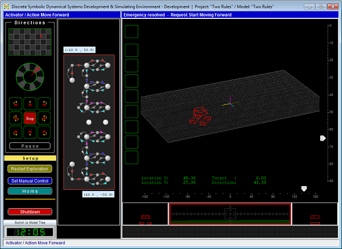

This page is a brief presentation of the Space Exploration Mission Software - an acting agent-robot behavior simulator that is implemented as a Java desktop application. The Application is an imaginary Mission Control and Monitoring Center (MCMC) interacting with the remotely acting Agent-Robot - a rover that may execute different operations. The task of the Agent is to explore the designated space, collect environmental parameters, and transmit its current coordinates packed with collected data to MCMC in accordance with scheduled exchange sessions. The Agent can be controlled manually - via manual controls, or automatically - by the McLN-based Agent Behavior Controller (ABC). The ABC takes input from Agent's sensors, recognizes situations arising dynamically, makes real-time control decisions, and activates actions relevant to the situations by communicating with Agent's local operation controllers. A screenshot of the layout of the application's panels is presented in Figure 1.

Figure 1. The Space Exploration Mission application screen snapshot.
The Space Exploration Mission application screen is an imitation of the MCMC dashboard. It consists of following control and monitoring panels: (1) Manual Agent Control panel (left panel), (2) McLN-based Agent Behavior Controller (center panel), (3) Agent Observation Monitors - the cluster of monitors occupying the right part of the screen, displaying a) the remote world and the agent in 3D view, while it accomplishes its exploratory mission, b) agent in 2D front and side views, c) the world view as it is seeing from the cabin of the Rover, and (4) Running Text Panel - the panel located below the monitor panels presenting received from the remote Rover data.
The McLN model, utilized by the ABC, has been developed in the Modeling & Simulation Environment software application described on the page: “Qualitative Dynamical Systems Modeling & Simulation Environment”.